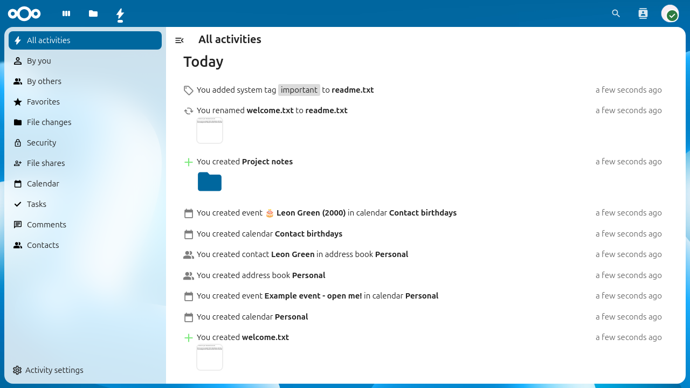

忠實原圖展示。原圖未修改；僅本地待審，未發布。下方為完整視窗，不是全部歷史的長截圖。

4290071b5ee1addf6ee9e563dbf7f2b3e307eda54cceded73d2f8930bb9a4254b276dc0e7c7fad2300abe615cd2be6f099348d97原圖來自官方自動截圖流程，使用隨機測試用戶與示例檔案。畫面中的 Leon Green 及 2000 年生日已核對為官方示例聯絡人，不是真實家庭資料。原圖未見私人訊息、真實聯絡資料或秘密憑證。
已檢視官方原圖，並核對官方站與固定版本原圖位元一致。截圖實際執行版本未確認，不能把目前文件標示的 Nextcloud 35 當成截圖版本。此封裝未使用瀏覽器，未驗互動或手機版，不是已製作完成的產品前端。